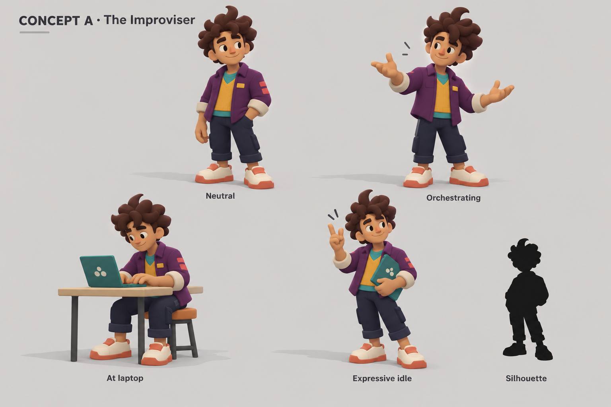
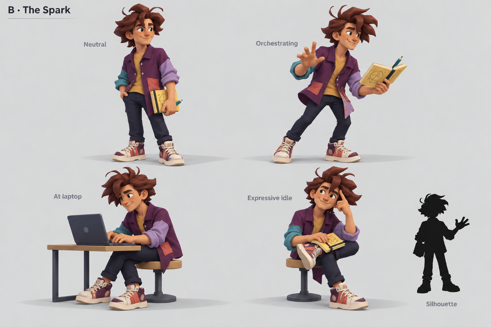
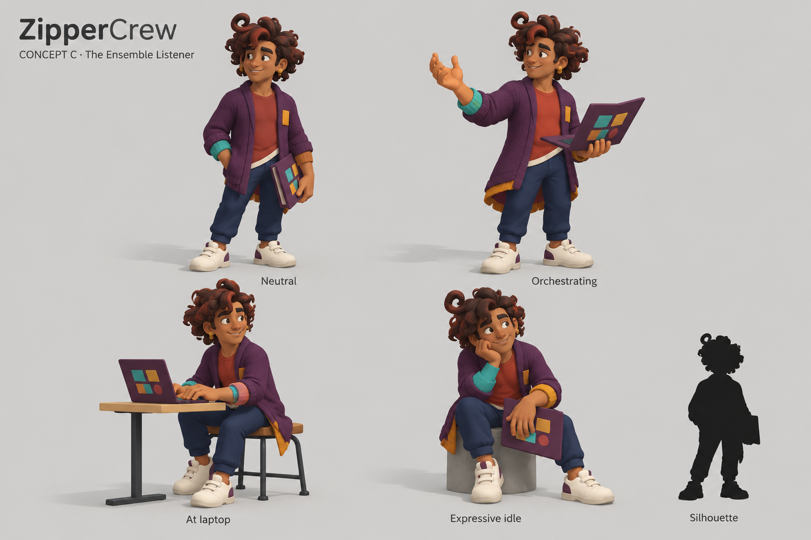
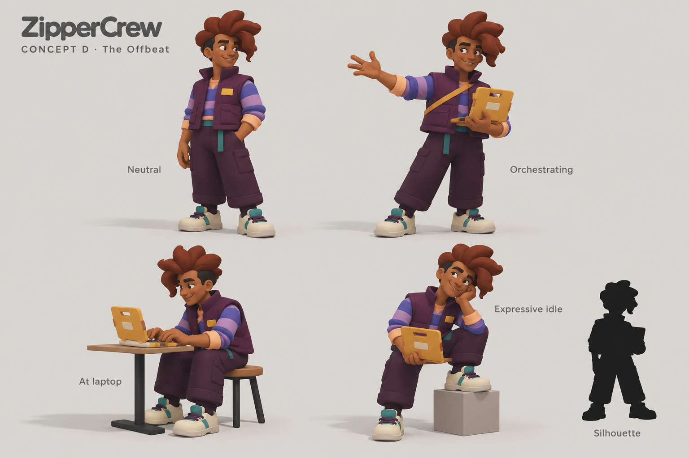
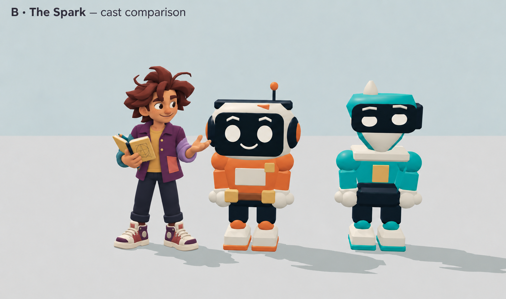
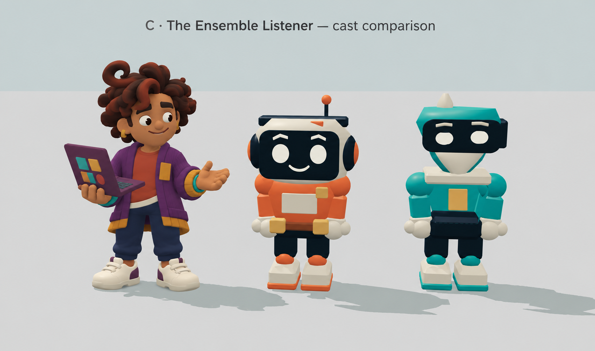

ZipperCrew · Art exploration · 6 October 2026
The Human as creative orchestrator
Four original young male-presenting directions, each with neutral, orchestrating, seated-at-laptop, expressive idle, and silhouette views. The references inform hair, clothing energy and playful warmth, without copying a face, costume or existing character.
Recommendation: B · The Spark. Its irregular hair, uneven overshirt and notebook gesture best combine an attentive orchestrator with mischievous energy. C offers a calmer, more welcoming alternative.
A · The Improviser

Layered creative-musician direction. Rounded curls and open hands are welcoming; the short jacket and tidy overall shape remain the most conventional of the four. A useful restrained baseline.
B · The Spark

Preferred direction. The swept shag, stray curls and uneven shirttail give the strongest unruly silhouette. The raised brow and notebook gesture suggest an idea arriving while listening. This revised sheet replaces an earlier, too-similar short-jacket version. For a game model, consolidate flyaways and shoe details into durable, readable forms.
C · The Ensemble Listener

Balanced orchestrator. The looping curl and long cardigan distinguish the silhouette; an open folio and palm-up gesture convey listening. Warmest alternative, with less mischief. Simplify the knit texture and small curls for the existing game materials.
D · The Offbeat

Bolder graphic interpretation. Broad folded hair, a boxy gilet and wide trousers produce a strong shape at distance. The portable computer is distinctive, but the swept hairstyle reads more deliberately styled than spontaneous.
The strongest two with the crew
Concept edits use the current orange Implementer and teal Reviewer as the reference, retaining their designs. These are generated cast studies, not Babylon screenshots or pixel-identical robot renders. B includes a second scale pass to bring the Human into a more equal relationship with the robots.

B: expressive organic silhouette against the two mechanical silhouettes. Strongest overall cast identity.

C: relaxed warmth and clear listening gesture. Softer personality; the tall curl adds some height to the trio.
Created using built-in image generation. Production GLBs, animation, renderer and workflow were not changed in this exploration. Silhouette views are concept studies; exact mesh silhouettes and seated deformation will need validation when a direction is modeled.